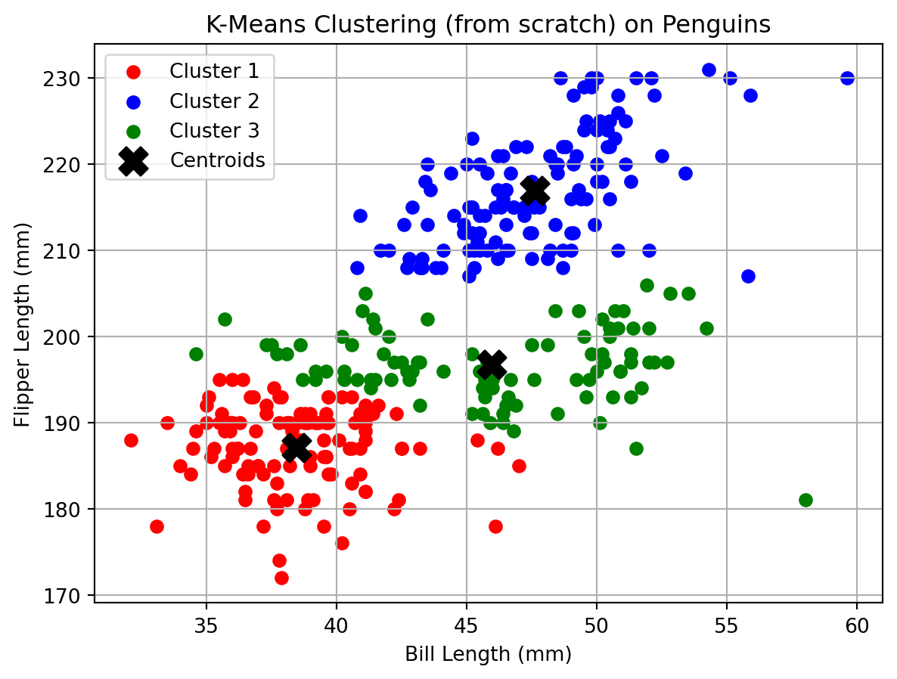
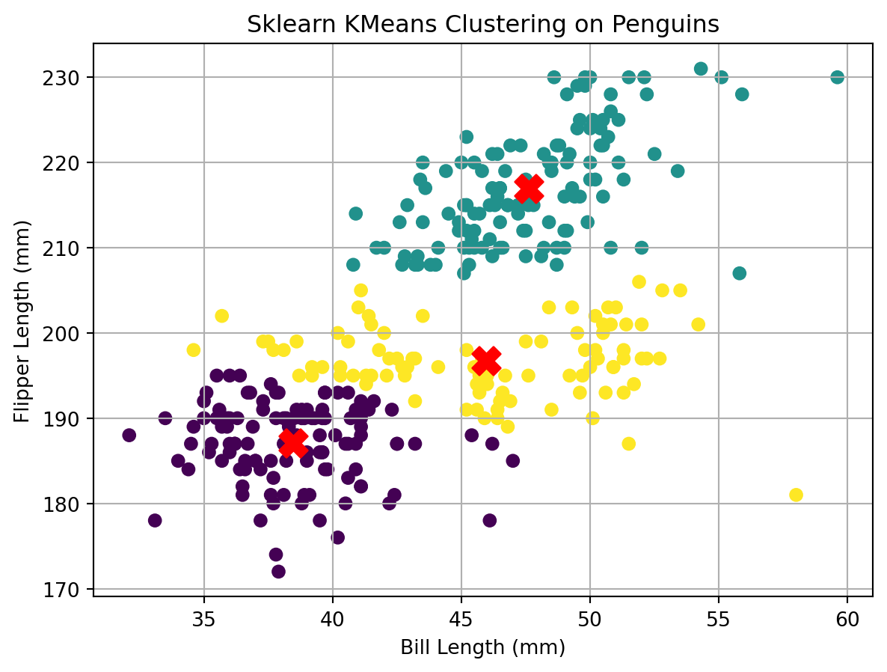
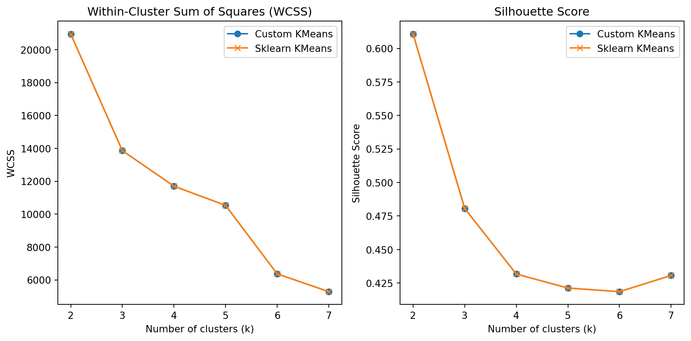
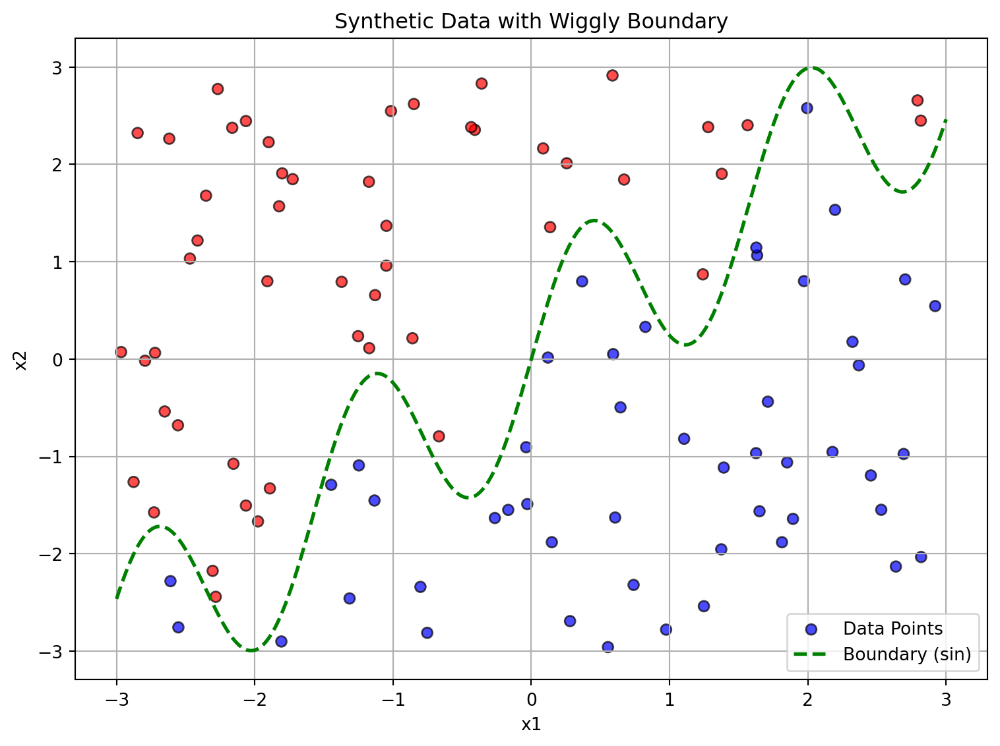
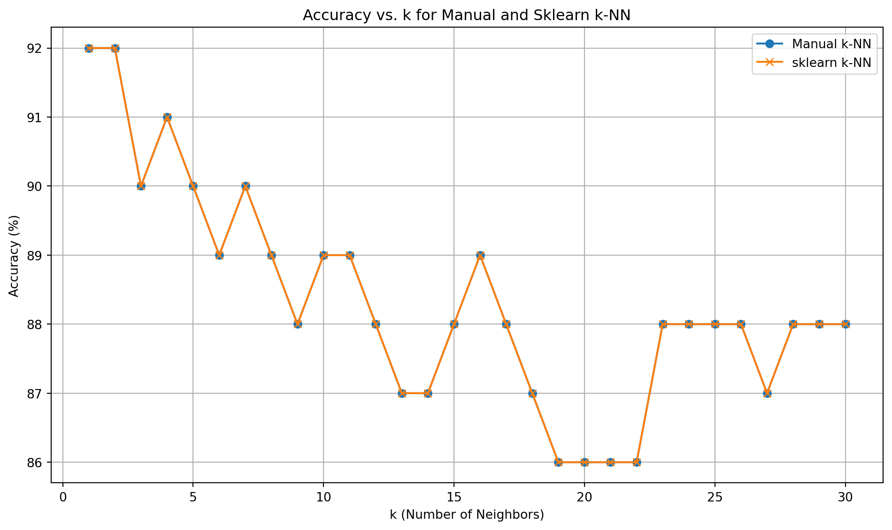

K-Means is an unsupervised machine learning algorithm used for clustering data into distinct groups (called clusters) based on similarity. The objective is to partition a dataset into K clusters in which each data point belongs to the cluster with the nearest mean (also called the centroid).
Mathematical Formulation
\(X = \{x_1, x_2, ..., x_n\} \subset \mathbb{R}^d\) be the set of \(n\) data points in \(d\)-dimensional space.
\(K\) be the number of clusters.
\(\mu_1, \mu_2, ..., \mu_K \in \mathbb{R}^d\) be the centroids of the clusters.
\(C_k\) be the set of indices of data points assigned to cluster \(k\).
Objective Function
The K-Means algorithm minimizes the within-cluster sum of squared distances (WCSS):
\(\| x_i - \mu_k \|^2\) is the squared Euclidean distance between point \(x_i\) and centroid \(\mu_k\).
The goal is to find the cluster assignments \(C\) and centroids \(\mu_k\) that minimize this value.
K-Means Clustering on the Palmer Penguins Dataset
Data
In this first analysis, we have been provided a dataset palmer_penguins.csv. To start the analysis, we began by loading the dataset into our environment using pandas.
The dataset provides detailed biological measurements and classification information for a sample of penguins across different islands. It is commonly used in data science education for exploratory analysis and classification modeling. The main variables in the dataset include:
species: The species of the penguin (e.g., Adelie, Chinstrap, Gentoo).
island: The island where the penguin was observed (e.g., Torgersen, Biscoe, Dream).
bill_length_mm: The length of the penguin’s bill (in millimeters).
bill_depth_mm: The depth of the penguin’s bill (in millimeters).
flipper_length_mm: The length of the penguin’s flippers (in millimeters).
body_mass_g: The body mass of the penguin (in grams).
sex: The sex of the penguin (male or female).
year: The year in which the observation was recorded.
import pandas as pdimport numpy as npimport matplotlib.pyplot as plt# Load the datasetdf = pd.read_csv("palmer_penguins.csv")display(df.head())
species
island
bill_length_mm
bill_depth_mm
flipper_length_mm
body_mass_g
sex
year
0
Adelie
Torgersen
39.1
18.7
181
3750
male
2007
1
Adelie
Torgersen
39.5
17.4
186
3800
female
2007
2
Adelie
Torgersen
40.3
18.0
195
3250
female
2007
3
Adelie
Torgersen
36.7
19.3
193
3450
female
2007
4
Adelie
Torgersen
39.3
20.6
190
3650
male
2007
In this section, we implement the K-Means clustering algorithm from scratch to explore how it partitions penguins based on two selected features: bill length and flipper length. By visualizing the intermediate steps of the algorithm — including the initial centroid placement, point assignment, and centroid updates — we gain insight into how K-Means iteratively refines cluster boundaries.
To evaluate the performance and accuracy of our custom implementation, we also compare the results to those obtained using Python’s built-in KMeans function from the scikit-learn library. This comparison helps validate our understanding of the algorithm and highlights any differences in cluster assignments or centroid convergence behavior.
In this implementation, we apply the K-Means clustering algorithm to the Palmer Penguins dataset using two numeric features: bill_length_mm and flipper_length_mm. After removing missing values, we randomly initialize three centroids (since \(k=3\)) from the data points using a fixed random seed for re
# Select the two features for clusteringdata = df[['bill_length_mm', 'flipper_length_mm']].dropna().values# Set number of clustersk =3# Fix random seed and select common initial centroidsnp.random.seed(88)initial_indices = np.random.choice(data.shape[0], size=k, replace=False)initial_centroids = data[initial_indices]def euclidean_distance(a, b):return np.linalg.norm(a - b)def kmeans(data, initial_centroids, max_iters=100): centroids = initial_centroids.copy() labels = np.zeros(len(data), dtype=int) # initialize labels arrayfor iteration inrange(max_iters): clusters = [[] for _ inrange(len(centroids))]for idx, point inenumerate(data): distances = [np.linalg.norm(point - c) for c in centroids] cluster_idx = np.argmin(distances) clusters[cluster_idx].append(point) labels[idx] = cluster_idx # store label assignment previous_centroids = centroids.copy() centroids = np.array([np.mean(cluster, axis=0) if cluster else previous_centroids[i] for i, cluster inenumerate(clusters)])if np.allclose(centroids, previous_centroids):breakreturn centroids, clusters, labels centroids, clusters, _ = kmeans(data, initial_centroids)


The resulting scatter plots illustrate the clustering output from both a manual implementation of the K-Means algorithm and the built-in KMeans function from scikit-learn, applied to the penguin dataset using bill_length_mm and flipper_length_mm as features. In both plots, the penguins are separated into three distinct clusters, each marked by different colors, with centroids shown as prominent markers — black “X” symbols in the custom implementation and red “X” markers in the scikit-learn version. The clusters visually correspond to different size profiles: one group with smaller bills and flippers, another with intermediate measurements, and a third with larger bills and longer flippers. The similarity in results between the two methods validates the correctness of the manual algorithm, while the scikit-learn version also demonstrates the efficiency and clarity of using optimized library tools. Both approaches suggest that the selected features effectively capture natural groupings within the data and that the algorithm converges to stable and meaningful cluster structures.
Evaluating Optimal Cluster Count Using WCSS and Silhouette Scores
In the following section, we assess the optimal number of clusters for the penguin dataset by calculating two key evaluation metrics: the within-cluster sum of squares (WCSS) and the silhouette score. Using built-in functions from scikit-learn, we compute these metrics for values of \(K\) ranging from 2 to 7. WCSS helps quantify the compactness of clusters, while the silhouette score provides a measure of how well each data point fits within its assigned cluster relative to other clusters. We visualize both metrics across the range of \(K\) values to determine the number of clusters that offers the best balance between cohesion and separation. The goal is to identify the most appropriate cluster count supported by both metrics.
To evaluate the optimal number of clusters for K-Means clustering, we computed two key metrics — the within-cluster sum of squares (WCSS) and the silhouette score — across a range of cluster values from \(k = 2\) to \(k = 7\). For each value of \(k\), we applied both our custom implementation of the K-Means algorithm and the scikit-learn KMeans function, ensuring consistent initial centroids by fixing the random seed. The calculate_wcss function explicitly measures the compactness of each cluster by summing the squared distances_
from sklearn.metrics import silhouette_scoredef calculate_wcss(clusters, centroids):returnsum(np.sum((np.array(cluster) - centroid) **2) for cluster, centroid inzip(clusters, centroids))# Initialize resultsresults = []# Loop over k valuesfor k inrange(2, 8): np.random.seed(88) indices = np.random.choice(data.shape[0], size=k, replace=False) initial_centroids = data[indices]# Custom kmeans custom_centroids, custom_clusters, custom_labels = kmeans(data, initial_centroids) custom_wcss =sum(np.sum((np.array(cluster) - centroid)**2) for cluster, centroid inzip(custom_clusters, custom_centroids)) custom_silhouette = silhouette_score(data, custom_labels)if k ==4: custom_test_label = custom_labels# Sklearn kmeans with same centroids kmeans_model = KMeans(n_clusters=k, init=initial_centroids, n_init=1, random_state=42) sk_labels = kmeans_model.fit_predict(data) sk_wcss = kmeans_model.inertia_ sk_silhouette = silhouette_score(data, sk_labels)if k ==4: sk_test_label = sk_labels results.append({"k": k,"custom_wcss": custom_wcss,"custom_silhouette": custom_silhouette,"sklearn_wcss": sk_wcss,"sklearn_silhouette": sk_silhouette })# Convert to DataFrame for plottingresults_df = pd.DataFrame(results)

The evaluation metrics plotted across different values of \(k\) provide clear guidance on selecting the optimal number of clusters for the penguin dataset. The Within-Cluster Sum of Squares (WCSS) plot shows a typical “elbow” shape — WCSS decreases sharply from \(k=2\) to \(k=3\), and then continues to decline more gradually from \(k=4\) onward. This indicates diminishing returns in intra-cluster compactness with increasing \(k\), and the inflection point at \(k=3\) suggests a natural clustering structure.
The silhouette score, which measures the quality of clustering in terms of both cohesion and separation, is highest at \(k=2\) and then drops notably for higher values. While \(k=2\) offers the best silhouette score, it likely oversimplifies the structure by grouping too broadly. At \(k=3\), the silhouette score remains reasonably high and represents a better balance between compactness and distinct separation, especially when cross-referenced with the WCSS elbow.
Given the combined interpretation of both metrics, \(k=3\) emerges as the most appropriate number of clusters. It offers a meaningful segmentation of the data with strong internal cohesion and clear boundaries between clusters, as confirmed by both the elbow method and the silhouette analysis.
2. K Nearest Neighbors
K-Nearest Neighbors (KNN) is a simple, non-parametric, instance-based learning algorithm used for both classification and regression. In classification, the algorithm assigns a data point to the class most common among its \(k\) nearest neighbors in the feature space. In regression, it predicts a value by averaging the values of the \(k\) closest neighbors.
Given a new input vector \(x_{\text{new}} \in \mathbb{R}^d\), the algorithm works as follows:
Compute the distance between \(x_{\text{new}}\) and all training samples \(\{x_1, x_2, ..., x_n\}\).
Select the \(k\) training samples closest to \(x_{\text{new}}\) using a distance metric (commonly Euclidean distance).
For classification:
Assign the label that appears most frequently among the \(k\) neighbors.
For regression:
Predict the target as the mean (or weighted mean) of the target values of the \(k\) neighbors.
Mathematical Formulation
Let \(D(x_i, x_{\text{new}})\) denote the distance between a training point \(x_i\) and a query point \(x_{\text{new}}\) (commonly:
Where: - \(\mathcal{N}_k(x_{\text{new}})\) is the set of \(k\) nearest neighbors of \(x_{\text{new}}\) - \(\text{mode}(\cdot)\) returns the most frequent class - \(y_i\) is the target value or label associated with point \(x_i\)
KNN is intuitive and effective for low-dimensional data, but its performance can degrade in high-dimensional spaces due to the curse of dimensionality.
Generating a Synthetic Dataset for KNN Classification
In this section, we generate a synthetic dataset specifically designed to test the behavior of the K-Nearest Neighbors (KNN) algorithm. The dataset contains two numerical features, x1 and x2, along with a binary target variable y. The label assignment is determined by a non-linear boundary defined by a sine function — specifically, whether x2 lies above or below a wiggly threshold curve of the form \(\sin(x_1)\). This creates a clearly separable yet non-linear pattern, making it ideal for evaluating the flexibility of KNN in capturing complex decision boundaries. The synthetic nature of the data allows us to precisely control and visualize how the algorithm responds to changes in \(k\) and model complexity.
import numpy as npimport pandas as pd# Set random seednp.random.seed(42)# Generate datan =100x1 = np.random.uniform(-3, 3, n)x2 = np.random.uniform(-3, 3, n)boundary = np.sin(4* x1) + x1y = (x2 > boundary).astype(int)# Create the DataFrame and convert y to categorical afterwarddat = pd.DataFrame({'x1': x1, 'x2': x2, 'y': y})
Visualizing the Synthetic Classification Dataset
To better understand the structure of the synthetic dataset, we create a scatter plot with x1 on the horizontal axis and x2 on the vertical axis. Each point is colored according to its binary class label y, visually highlighting the decision boundary. The plot reveals a distinct wavy separation between the two classes, corresponding to the sine function used during data generation. Optionally, the true underlying boundary — defined by the curve \(x_2 = \sin(x_1)\) — can also be overlaid on the plot to illustrate how well the data reflects the intended non-linear classification pattern. This visualization serves as a useful diagnostic for interpreting model fit and classification complexity in subsequent KNN analyses.

This visual effectively demonstrates the non-linear nature of the classification problem. The two classes are clearly divided by a curved, oscillating boundary rather than a straight line, highlighting the importance of using a flexible, proximity-based classifier like KNN. The figure confirms that the labels align closely with the sine-based threshold, validating the logic used to generate the labels and setting up an ideal test case for assessing KNN’s ability to capture non-linear patterns.
Generating a Test Dataset
To evaluate the generalization ability of the K-Nearest Neighbors (KNN) algorithm, we created a separate test dataset using the same data generation process as the training set, but with a different random seed to ensure new, unseen observations.
# Generate test dataset with a different seednp.random.seed(99)n_test =100x1_test = np.random.uniform(-3, 3, n_test)x2_test = np.random.uniform(-3, 3, n_test)boundary_test = np.sin(4* x1_test) + x1_testy_test = (x2_test > boundary_test).astype(int)# Create DataFrametest_dat = pd.DataFrame({'x1': x1_test, 'x2': x2_test, 'y': y_test})
Implementing K-Nearest Neighbors from Scratch
To classify new observations in the test dataset, we implemented the K-Nearest Neighbors (KNN) algorithm from scratch and evaluated its performance against Python’s built-in KNeighborsClassifier from the scikit-learn library. Both methods were configured with \(k=16\) neighbors.
The custom implementation computes the Euclidean distance between each test point and all training points, selects the \(k\) closest training instances, and assigns the most frequent label among them. In cases of ties, the algorithm defaults to the smallest label value. Predictions from this manual function were then compared with those produced by the KNeighborsClassifier, which was trained using the same training data and parameters.
To assess the performance, we measured classification accuracy and generated confusion matrices for both methods. Additionally, we computed the agreement rate — the proportion of test instances where both approaches predicted the same class. The results demonstrated strong alignment between the manual and scikit-learn implementations, validating the correctness of the custom algorithm and confirming its ability to replicate standard KNN behavior.
from sklearn.neighbors import KNeighborsClassifierfrom scipy.spatial import distancefrom collections import Counter# Prepare training and test dataX_train = dat[['x1', 'x2']].valuesy_train = dat['y'].valuesX_test = test_dat[['x1', 'x2']].valuesy_test = test_dat['y'].values# Manual KNN functiondef knn_predict(X_train, y_train, X_test, k=5): predictions = []for x in X_test:# Compute Euclidean distances to all training points dists = np.linalg.norm(X_train - x, axis=1)# Find the k nearest neighbors k_indices = np.argsort(dists)[:k] k_labels = y_train[k_indices]# Count votes and break ties by choosing the smallest label label_counts = Counter(k_labels) most_common =sorted(label_counts.items(), key=lambda x: (-x[1], x[0]))[0][0] predictions.append(most_common)return np.array(predictions)# Predict using manual KNNmanual_preds = knn_predict(X_train, y_train, X_test, k=16)# Predict using scikit-learnclf = KNeighborsClassifier(n_neighbors=16)clf.fit(X_train, y_train)sklearn_preds = clf.predict(X_test)# Compare predictionscomparison = pd.DataFrame({'Manual_KNN': manual_preds,'Sklearn_KNN': sklearn_preds,'Actual': y_test})from sklearn.metrics import accuracy_score, confusion_matrixdef compare_knn_results(y_true, pred_manual, pred_sklearn):print("Manual k-NN Accuracy:", accuracy_score(y_true, pred_manual))print("Sklearn k-NN Accuracy:", accuracy_score(y_true, pred_sklearn))# Agreement between the two methods agreement = np.mean(pred_manual == pred_sklearn)print("Agreement between manual and sklearn:", agreement)# Confusion matricesprint("\nConfusion Matrix - Manual k-NN:")print(confusion_matrix(y_true, pred_manual))print("\nConfusion Matrix - Sklearn k-NN:")print(confusion_matrix(y_true, pred_sklearn))compare_knn_results(y_test, manual_preds, sklearn_preds)
Evaluating KNN Accuracy Across Varying Values of k
To determine the optimal number of neighbors (\(k\)) for the K-Nearest Neighbors algorithm, we systematically evaluated model performance across a range of \(k\) values from 1 to 30. For each value of \(k\), we used our custom KNN implementation to classify the test dataset and recorded the percentage of correctly classified points. These results were plotted with \(k\) on the horizontal axis and classification accuracy (in percentage) on the vertical axis.
The resulting plot reveals how predictive performance changes with increasing neighborhood size. Accuracy tends to fluctuate at lower values of \(k\) due to overfitting, but stabilizes and peaks around a particular value. Based on the curve, the o
# Evaluate accuracy for k from 1 to 30ks =range(1, 31)manual_accuracies = []sklearn_accuracies = []for k in ks: manual_preds_k = knn_predict(X_train, y_train, X_test, k=k) clf_k = KNeighborsClassifier(n_neighbors=k) clf_k.fit(X_train, y_train) sklearn_preds_k = clf_k.predict(X_test) acc_manual = accuracy_score(y_test, manual_preds_k) acc_sklearn = accuracy_score(y_test, sklearn_preds_k) manual_accuracies.append(acc_manual) sklearn_accuracies.append(acc_sklearn)

To determine the most effective number of neighbors for the K-Nearest Neighbors (KNN) algorithm, we evaluated classification accuracy across a range of values from \(k = 1\) to \(k = 30\). For each \(k\), we recorded the percentage of correctly classified test points using both our manual KNN implementation and the built-in scikit-learn version. The results were plotted with \(k\) on the horizontal axis and classification accuracy on the vertical axis.
From the accuracy curve, we observe that the performance peaks at \(k = 1\) and \(k = 2\), achieving the highest accuracy of approximately 92%. These values correspond to the model’s best predictive performance on the test set. As \(k\) increases beyond 2, the accuracy gradually declines or fluctuates, indicating a trade-off between variance and bias. Lower values of \(k\) offer greater model flexibility and can capture complex, localized decision boundaries—an advantage in this case, given the wiggly, non-linear nature of the data-generating process. However, larger \(k\) values introduce more smoothing, which may result in misclassification near the boundary by incorporating distant or unrelated points into the majority vote.
Therefore, based on the plotted results, the optimal value of \(k\) is either 1 or 2, as these settings achieve the highest test accuracy while effectively capturing the underlying structure of the dataset.